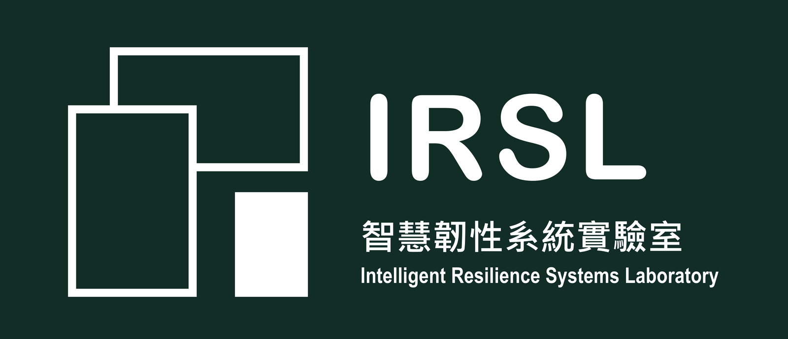

IRSL 致力於打造智慧且具韌性的系統，涵蓋醫療作業、 土木基礎設施到資訊安全等面向。我們設計能在不確定情境下自主推理、規劃並執行任務的多代理人（multi-agent）框架， 並應用於最需要韌性與可靠度的問題上。
用於自主推理、規劃與領域特定任務執行的多代理人框架。
行動篩檢站的最佳化與路徑規劃、資源分配，以及疫情應變調度。
基於 IFC 之建築資訊模型自動化衝突偵測與排除。
臨床文本理解與敏感健康資訊處理。
大型語言模型代理人系統之越獄攻擊與防禦。
實驗室消息與更新，敬請期待。
Email：hchsu@nkust.edu.tw
國立高雄科技大學 電機工程系